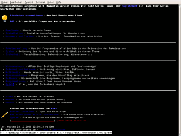

w3m
Dieser Artikel wurde für die folgenden Ubuntu-Versionen getestet:
Ubuntu 16.04 Xenial Xerus
Ubuntu 14.04 Trusty Tahr
Zum Verständnis dieses Artikels sind folgende Seiten hilfreich:
 w3m
w3m  ist ein sehr komfortabler und intuitiver Webbrowser für die Kommandozeile, der sogar "tabbed browsing" unterstützt und fast alle Formatierungsmöglichkeiten von HTML und CSS unterstützt (JavaScript aber nicht). w3m kommt komplett ohne grafische Oberfläche (XServer) aus, so kann man mit ihm auch dann noch im Internet surfen und nach einer Problemlösung suchen, wenn die grafische Oberfläche nicht mehr arbeitet.
ist ein sehr komfortabler und intuitiver Webbrowser für die Kommandozeile, der sogar "tabbed browsing" unterstützt und fast alle Formatierungsmöglichkeiten von HTML und CSS unterstützt (JavaScript aber nicht). w3m kommt komplett ohne grafische Oberfläche (XServer) aus, so kann man mit ihm auch dann noch im Internet surfen und nach einer Problemlösung suchen, wenn die grafische Oberfläche nicht mehr arbeitet.
Alternativen zu w3m sind die Programme Lynx und links2.
Installation¶
|  |
| w3m mit Bildern |
w3m war bis Ubuntu 10.10 Bestandteil jeder Ubuntu-Standardinstallation. Inzwischen muss das Programm zuerst installiert [1] werden:
w3m
 mit apturl
mit apturl
Paketliste zum Kopieren:
sudo apt-get install w3m
sudo aptitude install w3m
Möchte man auch Bilder anzeigen lassen (geht nur mit einem XServer bzw. in einem Terminal [2]), so installiert man zusätzlich das Paket
w3m-img (universe)
mit apturl
Paketliste zum Kopieren:
sudo apt-get install w3m-img
sudo aptitude install w3m-img
Bedienung¶
Die Bedienung des Browsers ist sehr leicht. Man startet ihn einfach über den Befehl w3m und hängt die URL, die man öffnen möchte, hinten an den Befehl an. Beispiel:
w3m http://www.ubuntuusers.de
Nun kann man mit den Pfeiltasten den Cursor über den Text bewegen. Befindet sich dieser auf einem Link (blaue Schriftfarbe), kann man diesen mit ⏎ öffnen.
Tastenkürzel¶
Hier sind einige wichtige Tastenkürzel aufgeführt:
| Tastenkürzel | ||
| Taste/n | Aktion | |
| ⇧ + H | öffnet eine Hilfedatei mit allen Tastenkürzeln | |
| ⇧ + U | Internetadresse (URL) per Tastatur eingeben | |
| Tab ⇆ | springt von einem Link zum nächsten | |
| Esc + Tab ⇆ | springt von einem Link zum vorherigen | |
| ⇧ + 7 | Suchbegriff eingeben | |
| N | weitersuchen | |
| ⇧ + N | rückwärts weitersuchen | |
| ⇧ + T | öffnet einen neuen Tab | |
| Strg + Q | schließt den aktuellen Tab | |
| Alt Gr + 0 | zum nächsten Tab bewegen | |
| Alt Gr + 7 | zum vorherigen Tab bewegen | |
| Q | schließt w3m | |
| ⇧ + Q | schließt w3m sofort, ohne Bestätigung | |
| Esc + A | speichert ein Lesezeichen für die aktuelle Seite | |
| Esc + B | öffnet die Lesezeichenliste | |
| Esc + S | speichert den HTML-Code der Seite in eine Datei | |
| Esc + L | öffnet eine Liste aller Links auf der aktuellen Seite | |
| V | wechselt von der HTML-Codeansicht der Seite in die normale und umgekehrt | |
| Esc + C | öffnet die w3m-Kommandozeile, hier kann man die in der Hilfe fett gedruckten Befehle eingeben (CLOSE_TAB schließt zum Beispiel den aktuellen Tab) | |
 Übersichtsseite
Übersichtsseite- Erstellt mit Inyoka
-
 2004 – 2017 ubuntuusers.de • Einige Rechte vorbehalten
2004 – 2017 ubuntuusers.de • Einige Rechte vorbehalten
Lizenz • Kontakt • Datenschutz • Impressum • Serverstatus -
Serverhousing gespendet von